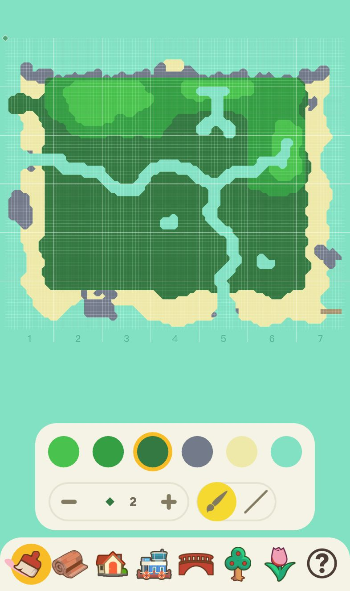
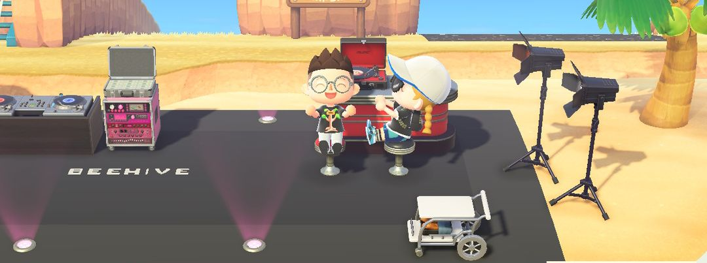
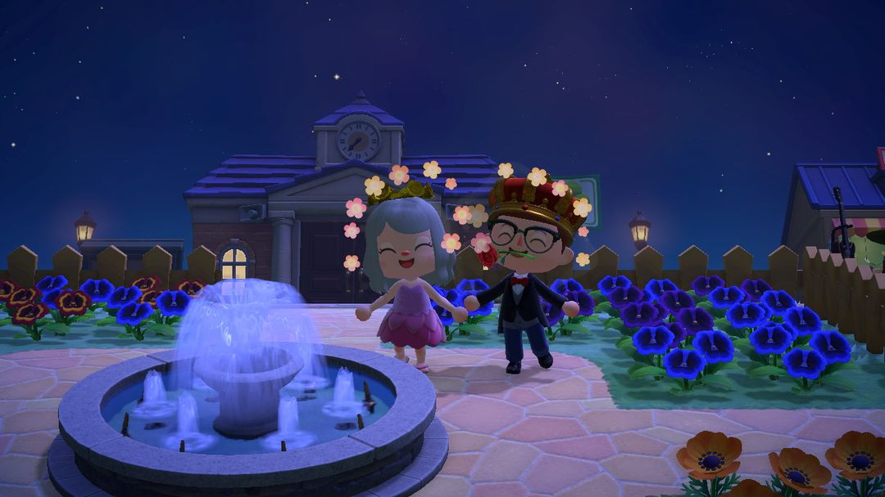
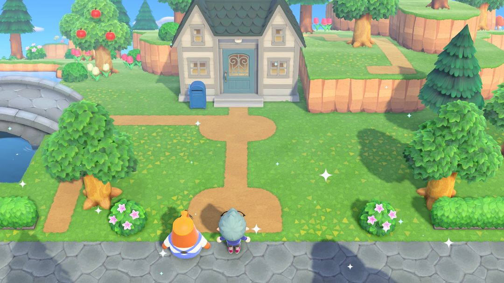
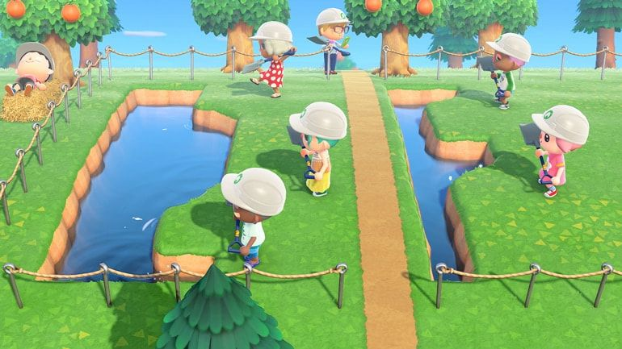

島づくり入門：スコップより先に設計図
計画、地形の変更、道づくり、景観づくりと、手間を減らす助っ人たち
島クリエイターを手に入れたとたん掘り始めて、途中で川が道をふさいでいたり、家の位置がずれていたりして、結局一からやり直す……という人は少なくありません。島づくりでいちばん時間をとられるのはやり直しです。建物を1つ動かすにもベルがかかって1日待つことになり、川を1本埋めるのも1マスずつの作業です。スコップを持つ前に、少し時間をかけて島全体を紙かスマホに描いておきましょう。
順番はこれだけ覚えておけばOKです。まず建物の位置を決め、次に地形を変え、最後に道を敷いて花を植え、家具を置く。迷うレイアウトは、先に夢の島で自由に試してみて、納得してから自分の島で工事を始めましょう。
01まず島を描いてみる
島の評価が★3になり、とたけけのライブを見ると、翌日たぬきちがスマホに「島クリエイター」を入れてくれます。草地と土の道は最初から敷けますが、いしだたみ・レンガのみち・くみきのみちなどの道や、「かせんこうじライセンス」「がけこうじライセンス」は、案内所のタヌポートでマイルと交換する必要があります。
手をつける前に、島をおおまかにいくつかのエリアに分け、それぞれ何を置くか決めておきましょう。
玄関エリアは、飛行場を出て最初に目に入る場所。訪れた人の島の第一印象はここで決まります。
住宅エリアには自分の家と住民の家を置きます。
商業エリアにはお店、仕立て屋、博物館を。1本の通りに並べると、回りやすくなります。
自然エリアは果樹園、花畑、林、海辺のためにとっておきます。
案内所、飛行場、桟橋、河口の位置は変えられません。これらを基準点にして、ほかのものをまわりに配置していきましょう。
建物はたぬきちに頼めば移設できます。自分の家は3万ベル、お店・博物館・住民の家は1回5万ベルで、一度に1軒だけ、完成は翌日です。移設は高いうえに時間もかかるので、先に建物の位置を決めてから地形を変えましょう。地形を整えたあとで家を動かすために壊す、ということがなくなります。
設計図はネットの島デザインツールで描いてもいいですし、あつ森 サークルiOSアプリの「島づくりプラン」を使えば、スマホで川や崖、建物を先に置いてみて、ちゃんと道が通れるか確かめられます。

「島づくりプラン」：下の列に地形・道・建物・橋・木・花などのツールが並びます
02地形を変えるときのポイント
壊してから作る、大きいところから小さいところへ
崖や川のすぐそばに木・岩・家具・建物があると、工事ができません。まず変えたいエリアを空っぽにしてから、川と崖の大まかな形を作り、形が決まったら最後に道を敷いて花を植えましょう。
滝の両側は崖で挟む
川が崖から流れ落ちるマスは、両側が崖になっていないと滝が作れません。逆に、滝のある崖を崩したいときは、先に滝の部分の川を埋める必要があります。
橋と坂はそれぞれ10か所まで
数に上限があるので、段差の多い島は特にしっかり計算しておきましょう。どの段にも上り下りの道を残して、高台に閉じ込められないように。
ヤシのきは砂の上に植える
ヤシのきは砂の上でしか育ちません。島クリエイターで砂の道を敷けば、草地の近くにもヤシのきを植えられるので、砂浜にぎゅうぎゅうに並べなくても大丈夫です。
ヒントLボタンを押すとキャラクターがマス目に合わせて立ち、押し続けると1方向にだけ進みます。川を掘る、崖を積む、道を敷く、フェンスを立てるときに押しておけば、まっすぐな線が引けます。
03道づくりとマイデザイン
道は島の骨組みです。メインの道は2〜3マスと少し広めにして各エリアをつなぎ、小道は1マスで十分。花畑や林の中へ回り込むように通しましょう。
標準の道のほかに、「マイデザイン」でオリジナルの床タイルも敷けます。石だたみ風、木のデッキ、花壇のふち、横断歩道など、いろいろな人が作っていて、ネットにはそのまま使えるデザインコードがたくさんあります。QRコードの読み込み方は『マイデザインPRO』の記事を見てください。
マイデザインの床を使うときは、ふちに気をつけましょう。標準の道は草地との境目が自動で丸くなりますが、マイデザインはならないので、敷いたあとのふちがスパッと切れて不自然に見えます。草地へのグラデーションが入ったデザインを選ぶか、ふちに低木や花を植えて隠すとよいでしょう。
それと、地面を全部埋めてしまわないこと。草地や土を少し残しておくと、島が自然に見えます。

小道の両側を花壇とフェンスで縁取り
04家具で景色をつくる
家具を島のあちこちにバラバラに置くと散らかって見えますが、まとまりごとに小さな景色として飾るとぐっと見栄えがよくなります。テーマを1つ決めて主役を選び、まわりをフェンスや低木、花で囲みましょう。置くときのちょっとしたコツです。
同じエリアは同じシリーズをベースにします。たとえばまるた、アイアン、たけ、大理石など。1つ決めてから足していくと、雰囲気がちぐはぐになりにくいです。
道に近い側には低いもの、奥には高いものを置きます。手前を低く奥を高くすると、道から見たときに奥行きが出て、後ろのものも隠れません。
景色の中には1マスの通り道を残しておくと、遊びに来た人が中に入って写真を撮れます。
飾り終えたら夜にも見に行きましょう。がいとうやランタン、キャンプファイアに明かりがともると、夜の島はまたちがった表情になります。

砂浜にDJブース、照明、ラグで作った小さなステージ

夜の広場。ふんすいのまわりを青い花でぐるりと囲んで
やたい：いちばん手軽な景色づくり
「やたい」のDIYレシピはタヌポートで2,000マイルと交換でき、もくざい12個で作れます。のれんを自分のマイデザインに変えられるので、同じやたいでものれんを替えるだけで、フルーツ屋さん、カフェ、夜市の屋台に早変わり。無料の交換台にも使えます。お店で手に入る「シンプルなパネル」も同じくマイデザインを貼れるので、看板やメニュー、道案内にぴったりです。
05手間を減らす3つの助っ人
リセットさんのお片付けサービス
島を作り変える前の片付けはいちばん骨が折れますが、リセットさんに任せられます。砂浜全体、島全体、または指定したエリアの、地面に置いた家具や花、敷いたマイデザインを一度に片付けてくれて、そのまま捨てるか収納にしまうかを選べます。初回は無料、その後は1日6万ベルで、払った日は何回でも使えます。雑草、木、低木、地面に埋まったものは対象外です。

リセットさんに片付けてもらった場所。地面のものが一度に空っぽに（画像：任天堂）
収納は9000個、花や木もしまえる
収納は9000個まで増やせて、花や木もそのまましまえます。1本ずつ別の場所に仮植えしなくても、地形を変え終わってから取り出して植え直せばOKです。
夢の島
ベッドで眠ると、ゆめみが「夢の島」に連れて行ってくれます。1人最大3つまで作れて、島の地形は自由に変えられ、図鑑に登録した家具で飾れます。時間や天気も変えられて、友だちといっしょに作ることもできます。夢の中のものは自分の島に持ち帰れないので、レイアウトの試し置きにぴったり。夢の島でアイデアを形にして確かめ、気に入ったら自分の島で同じように作りましょう。夢の島に行くにはNintendo Switch Onlineへの加入が必要です。

夢の島でみんなで川を掘ったり地形を変えたり（画像：任天堂）
06初心者がよくやる失敗
新しい住民の土地を残していない。住民が10人未満のうちは、空き地がないと新しい家が建ちません。住宅エリアを計画するときは、まだ引っ越してきていない住民の分も数に入れておきましょう。
崖をこまかく刻みすぎる。ギザギザの崖は見た目もよくないし、歩くときも遠回りになります。ふちはなるべくなめらかにして、曲がり角には坂を置ける場所を残しておきましょう。
木を密集させすぎる。木は近すぎると大きく育たず、植えすぎると島の評価も下がります。森っぽさを出したいなら、低木や花で補いましょう。
島全体を一気に変える。1回に変えるのは1エリアだけにして、終わってから次へ。そうすれば島がずっと工事現場のようにならずにすみます。
07アップデートでの変更点
リセットさんのお片付けサービス、花や木もしまえる9000個の収納、夢の島、Lボタンでマス目に合わせる機能は、どれもVer.3.0で追加されたものです。Ver.3.0にアップデートしていないと使えません。
あつ森 サークル · App Store で「あつ森 サークル」を検索